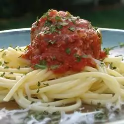

Spaghetti With Marinara Sauce

Description
Quick and easy! Leftover sauce can be easily frozen for a later meal.
Ingredients
- Meat
- Onion
- Canned Tomatoes
- Fresh Herbs
- Sugar
- Spices and Seasonings
- Noodles
- Tomato Sauce
Steps
- Cook the sauce
- Cook the noodles
- Toss noodles in sauce